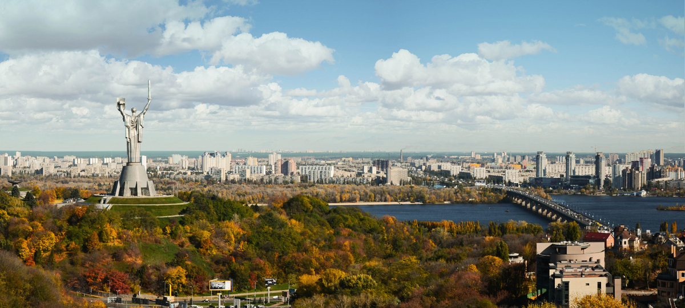
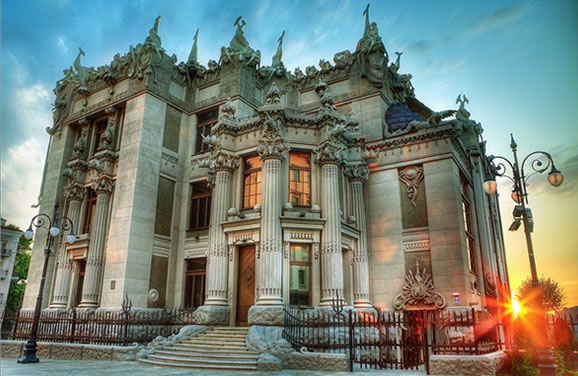

Київ - місто граніту та зелених каштанів
Київ відомий як столиця України. Це місто контрастів і водночас усталених звичаїв. Він вдало поєднує у собі старовинні та модерні риси, що дуже гармонічно доповнюють один одного. Це місто переплетення різних стилів, епох та історій. Прогулюючись вулицями, ви зможете насолодитися сучасними кольорами сірого металу та каменю і зеленим кольором багаточисельних дерев і рослин, що, пробиваючись під сонячним промінням, дають аромат свіжості та початку чогось нового. Київ - місто, що поєднує два береги України в одне ціле, скріплюючи їх мостами в один єдиний організм. Історія Києва налічує понад 1500 років. Це місце старовинних пам’яток архітектури, відомих нам з історії Київської Русі, – Києво-Печерська Лавра, Софійський та Михайлівський собори, храми та монастирі. Вулиці Подолу з їхньою дивовижною архітектурою, Андріївський Узвіз, Дніпровські береги та сотні зелених парків є найбільш відвідуваними туристичними місцями. Вулиця Хрещатик, Майдан Незалежності, Європейська площа асоціюються як місця каштанів та символи української державності.
Це місто пострадянської епохи із рисами нових, зовсім юних тенденцій у культурі, освіті та повсякденному житті. Для нового покоління Київ - це місто можливостей і досвіду попередніх поколінь, місто нової і згасаючої ментальності… Київ варто відвідати хоча б для того, аби насолодитися його атмосферою, повітрям, могутністю, відчути контраст культур, епох та історії. Повірте, це українське місто варте вашого часу та уваги!
Куди піти?
1.Андріївський узвіз
Андріївський узвіз – друга за популярністю вулиця Києва після Хрещатика, яка веде від Володимирської вулиці до Десятинної та Контрактової площі, що розташована на Подолі.
У часи Київської Русі Андріївський узвіз був найкоротшим шляхом з верхнього міста, де перебували Золоті Ворота й Софія Київська в нижнє місто – на Поділ, де був міський порт і ремісничі квартали. На початку XVIII століття, за вказівкою київського губернатора, проїзд розширили, і тепер тут могли проїхати навіть навантажені вози, запряжені волами.За легендою, Андріївський узвіз отримав свою назву завдяки Святому Андрію Первозванному. Легенда свідчить, що колись на місці Дніпра було море, але коли Святий Андрій поставив на вершині пагорба хрест, вода відійшла. Тепер на цьому місці стоїть Андріївська церква – головна окраса вулиці.
Пам’яткою вулиці є і будинок №13, де жив письменник Михайло Булгаков, автор романів «Майстер і Маргарита», «Біла гвардія», «Дні Турбіних»… Цей будинок зараз є музеєм Булгакова.На честь Андріївського узвозу відкрито цілий музей, присвячений історії вулиці, який називається «Музей однієї вулиці», тут представлена історія узвозу в картинах, фотографіях та інших речах від старовини до наших днів.Раніше Андріївський узвіз називали київським Монмартром – сюди приходили художники зі своїми творами на продаж, музиканти і артисти. Тут можна було подивитись та придбати українські сувеніри – вишиванки, писаний посуд, фігурки. Вздовж всієї вулиці розміщувались багато картинних галерей, художніх салонів. А кожен рік на Андріївському узвозі в День Києва проходив вернісаж народних ремесел.
2.Будинок з химерами
Це, мабуть, найвідоміша будівля у Києві. Будинок розташований у теперішньому центрі Києва, неподалік від Палацу президента України, а на початку ХХ століття все було інакше. Тоді в цій частині Києва були проведені роботи по впорядкуванню цієї доволі занедбаної території. На місці осушеного Козиного болота побудували театр Соловцова (нинішній театр ім. І. Франка), а ділянка землі на кручі, що височіла над театром, продавалася на міському аукціоні за дуже низькою ціною, оскільки вона була геть непридатна для будівництва. Тому рішення архітектора Владислава Городецького зводити там будинок для своєї родини викликало всезагальне здивування.
Будинок з химерами побудований у стилі модерн у 1902-1903 рр. За рік побудували сам будинок, і ще два роки було витрачено на зовнішнє та внутрішнє його оздоблення. Це був перший будинок у Києві, зведений з використанням нового матеріалу – цементу. Здійснення такого проекту могло служити ще й рекламною акцією продукції промисловця Ріхтера, що займався виробництвом цементу. Для того, щоб створити стійку основу для будинку, на крутому пагорбі було вбито близько 50 бетонних паль на глибину 5 метрів. З боку вулиці Банковій будинок має три, а з боку театру ім. Івана Франка – шість поверхів.